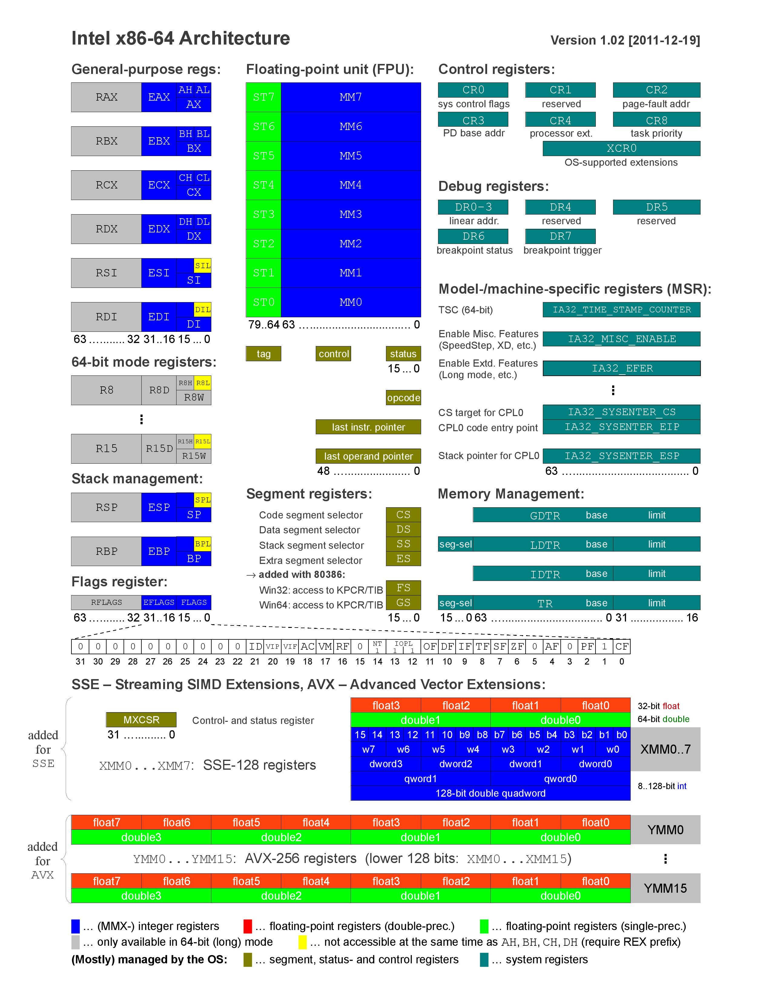

Hi guys,
In the past few days, I was searching about non-general purpose register then I saw the following pictures that give me a new idea of posting about the non-general purpose registers.
These pieces of information might have some fault because of my misunderstandings about some of them, if you see any fault then please tell me in the comments!
You can also download the PDF version of the above picture here!
I don’t know if there are other registers but in the rest of the post, I’ll explain about the register that I know, which is shown in the above pictures. By the way, you all should know about general purpose registers like eax , ecx, ebx,edx,esi,edi,esp,eip (or their equivalent rax,rbx,rdx,rcx,rip,rsp and etc). But non-genral purpose registers are also exists
First of all, let me explain you about segments.
Actually, Segmentation is the division of memory into segments or sections, to address a segment you need to have a two-dimensional variable to point to a valid address and those variables are Base Address and Limit.
- Base Address contains the starting physical address where the segments reside in memory.
- Limit specifies the length of the segment.
Segment Registers
Segment register fs, gs, cs, ss, ds, es is used for segmentation, in x86 in the real mode they used for addressing a pointer to a special region in memory like ss for stack segment or ds for the data segment.
Segmentation is no longer available in Long-Mode but the modern Operating Systems still use fs and gs in x86 and x64.
Model-Specific Register (MSR)
In the introduction of 80386, Intel started to introduce “experimental” features which would not necessarily be present in future.
From Wikipedia :
The first of these were two “test registers” (T6 and T7) that allowed the 80386 to speed up virtual-to-physical address conversions. Three additional test registers followed in the 80486 (TR3–TR5) that enabled testing of the processor’s caches for code and data. None of these five registers were implemented in the subsequent Pentium processor.
With the introduction of the Pentium processor, Intel provided a pair of instructions (rdmsr and wrmsr) to access current and future “model-specific registers”, as well as the CPUID instruction to determine which features are present on a particular model. Many of these registers have proven useful enough to be retained. Intel has classified these as architectural model-specific registers and has committed to their inclusion in future product lines.
GDTR, LDTR, IDTR, TR and MSW Registers
GDTR: Determines the current location of Global Descriptor Table
LDTR: Determines the current location of Local Descriptor Table
IDTR: The location of Interrupt Descriptor Table which always point to start of nt!KiDivideErrorFault.
TR: TR stands for Task Register which is a 16-bit register that holds a segment selector for TSS. This register is mainly used for task switching in hardware-level but modern Operating-Systems like Windows and Linux don’t use register because they implement their software-level task switching. LTR and STR instructions are used to read or set the value of TR Register.
Control Register
Somehow like MSR Registers, there is some older way to control CPU features.
You can use these registers (cr0-cr7) to make a feature enable or disable them.
There is also a cr8 register which is used by a REX prefix in long mode. CR8 is used to prioritize external interrupts and is referred to as the task-priority register (TPR).
You can also visit Wikipedia which described every feature related to each bit of the Control Registers.
Debug Registers
Intel and AMD also provide debug registers in order to facilitate the debugging process by providing 8 debug register.
During a debugging process, we can set up to 4 pointers to cause a hardware breakpoint with different conditions (like when you want to set a breakpoint when some instruction tries to read a special location or trying to write on that pointer and etc). all these conditions are set in DR4 to DR7 and DR0 to DR3 is used to store the pointers.
Extended Feature Enable Register (EFER)
AMD uses EFER to enable or disable some of its features (like cr8 in Intel). EFER is a model-specific register.
Floating point unit (Registers)
Because of the problem of saving floating values into binary registers, there are FPU Registers (or floating point unit registers) which helps in storing a computing on float numbers.
XMM Registers
XMM Registers are mainly used by Streaming SIMD Extensions. SSE originally added eight new 128-bit registers known as XMM0 through XMM7. The AMD64 added a further eight registers XMM8 through XMM15.
SSE instructions are used typically in digital signal processing and graphics processing.
YMM Registers
By the rise of Advanced Vector Extensions, Intel introduced the 16 new register and new sets of instructions. AVE is an upgrade to SSE which can speed up FP operations so its main purpose is to make multimedia calculation faster.
AVX uses sixteen YMM registers. Each YMM register contains:
- eight 32-bit single-precision floating point numbers or
- four 64-bit double-precision floating point numbers.
I’m sure that this post will be updated ! so keep checking our blog.
Thanks for reading,
Comments powered by Disqus.